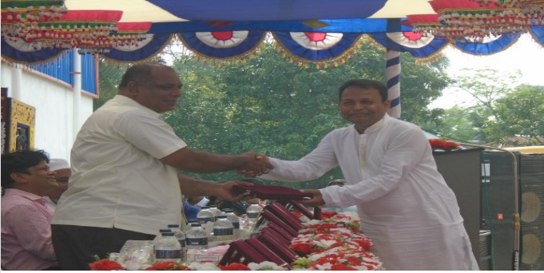

Ideal Polytechnic Institute is controlled by the Directorate of Technical Education which was established on 2010 and Bangladesh Technical Education Board which was established 1967, largely controlled by the Ministry of Education, Government of the Peoples Republic of Bangladesh. In Ideal Polytechnic Institute, Diploma in engineering Courses are being offered in different technologies. After successful Completion of These Courses, The graduates are exposed to the job market, and able to engage themselves in national development works.
Continue Reading ♦ 2014-15 session batch of Ideal Polytechnic Institute & Vision Institute of Medical Technology were given farewell through a Doa program. The event took place at the college auditorium on November 30. Respected Executive Director Eng. Md Abdul Khalek Sadi and Chirman Loton Sir was present on that event.
Continue Reading ♦Ideal Polytechnic Institute is controlled by the Directorate of Technical Education which was established on 2010 and Bangladesh Technical Education Board which was established 1967, largely controlled by the Ministry of Education, Government of the Peoples Republic of Bangladesh. In Ideal Polytechnic Institute, Diploma in engineering Courses are being offered in different technologies. After successful Completion of These Courses, The graduates are exposed to the job market, and able to engage themselves in national development works.. more[..]